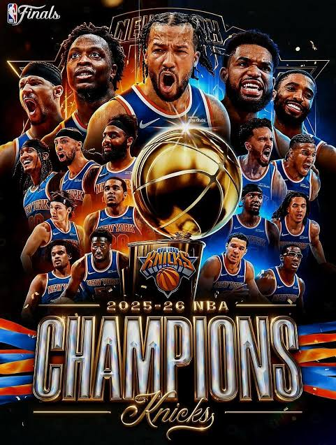

I New York Knicks (ufficialmente New York Knickerbockers) sono una delle franchigie di basket più antiche e iconiche della NBA, rappresentando un vero e proprio simbolo sportivo e culturale della città di New York. Competono nella Eastern Conference e si distinguono per i classici colori blu, arancione e bianco, oltre che per una delle tifoserie più appassionate, vocali ed esigenti di tutto lo sport americano.
Il luogo in cui giocano le partite casalinghe è pura leggenda: il Madison Square Garden.
Situato nel cuore di Manhattan, a Midtown, proprio sopra la Pennsylvania Station, è universalmente riconosciuto come "La Mecca del basket" (o semplicemente The Garden). Non si tratta di una semplice arena sportiva, ma di un tempio mondiale dell'intrattenimento. L'atmosfera al suo interno è elettrizzante e il palcoscenico è così prestigioso che, per qualsiasi giocatore avversario, fare una grande prestazione sul parquet del Madison Square Garden è considerato uno dei massimi onori in carriera.

La storia dei New York Knicks è un mix affascinante di trionfi indimenticabili e di brucianti sconfitte all'ultimo atto. Nella loro bacheca brillano tre titoli di campioni NBA, ma il percorso della franchigia è segnato anche da diverse finali perse (ben sei) che hanno forgiato il carattere della squadra e l'infinita pazienza dei suoi tifosi.
Le NBA Finals del 2026 rappresentano un capitolo epocale nella storia del basket e un momento indimenticabile per la città di New York. A giugno del 2026, i New York Knicks si sono laureati campioni NBA sconfiggendo i San Antonio Spurs per 4-1 nella serie finale. Questa vittoria ha permesso alla franchigia di spezzare un doloroso digiuno durato ben 53 anni, riportando il titolo nella città per la prima volta dal lontano 1973.
La sfida ha visto contrapporsi due squadre di grandissimo talento, con i Knicks guidati da Jalen Brunson contro i giovani e pericolosi Spurs trascinati dal fenomeno francese Victor Wembanyama. Dopo aver difeso il fattore campo al Madison Square Garden, i Knicks hanno chiuso definitivamente i conti in Gara 5 in trasferta in Texas. La partita decisiva è stata una battaglia combattutissima vinta da New York con il punteggio di 94-90.
Oltre ad aver riportato il Larry O'Brien Trophy a Manhattan, la stagione dei Knicks è passata alla storia per un record assoluto: sono diventati la prima squadra in assoluto a vincere sia la NBA Cup (il torneo di metà stagione) che il titolo di campioni NBA nella stessa annata sportiva. Una cavalcata perfetta che ha ripagato decenni di attesa, delusioni e profonda fedeltà da parte dei tifosi newyorkesi.

La serie si è conclusa in 5 partite, con la squadra di New York che chiude i giochi per 4-1 vincendo in trasferta l'ultima partita. Nella seguente tabella sono riportati i risultati delle 5 gare.
| Gara 1 | Gara 2 | Gara 3 | Gara 4 | Gara 5 | |
|---|---|---|---|---|---|
| NYK | 105 | 105 | 111 | 107 | 94 |
| SAS | 95 | 104 | 115 | 106 | 90 |
Al termine delle 5 gare è stato assegnato il trofeo alla squadra di New York. I 2 giocatori che si sono distinti di più in questa serie finale sono stati:
Al seguente link sono riportati roster e statistiche dei giocatori di entrambe le squadre.
Jalen Brunson inoltre, è stato decretato MVP (Most Valuable Player) delle finali, ottenendo così uno dei premi individuali più prestigiosi e ambiti da tutti i giocatori della lega.
Clicca questo testo per tematizzare i colori della pagina!
